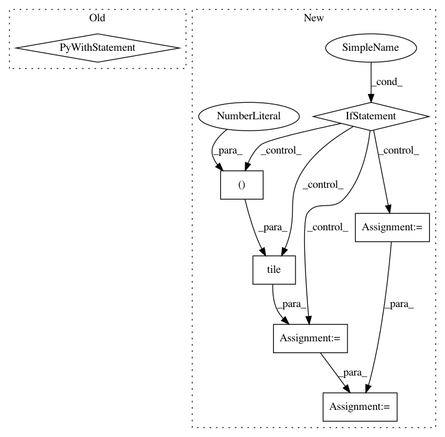

d15a15df582f43d9bc65a434db0d64c9e276b724,python/magent/builtin/mx_model/dqn.py,DeepQNetwork,infer_action,#DeepQNetwork#Any#Any#Any#Any#,136
Before Change
n = len(view)
self._reset_bind_size(n)
with self.ctx:
data_batch = mx.io.DataBatch(data=[mx.nd.array(view), mx.nd.array(feature)])
self.model.forward(data_batch, is_train=False)
qvalue_batch = self.model.get_outputs()[0]
best_actions = mx.nd.argmax(qvalue_batch, axis=1).asnumpy()
random = np.random.randint(self.num_actions, size=(n,))
cond = np.random.uniform(0, 1, size=(n,)) < eps
ret = np.where(cond, random, best_actions)
After Change
eps = 0
n = len(view)
if n < self.num_gpu:
view = np.tile(view, (self.num_gpu, 1, 1, 1))
feature = np.tile(feature, (self.num_gpu, 1))
batch_size = min(len(view), self.infer_batch_size)
self._reset_bind_size(batch_size)
best_actions = []
infer_iter = mx.io.NDArrayIter(data=[view, feature], batch_size=batch_size)
for batch in infer_iter:
self.model.forward(batch, is_train=False)
qvalue_batch = self.model.get_outputs()[0]
batch_action = mx.nd.argmax(qvalue_batch, axis=1)
best_actions.append(batch_action)
best_actions = np.array([x.asnumpy() for x in best_actions]).flatten()
best_actions = best_actions[:n]
random = np.random.randint(self.num_actions, size=(n,))
In pattern: SUPERPATTERN
Frequency: 3
Non-data size: 7
Instances
Project Name: geek-ai/MAgent
Commit Name: d15a15df582f43d9bc65a434db0d64c9e276b724
Time: 2017-11-23
Author: zhenglianmin96@163.com
File Name: python/magent/builtin/mx_model/dqn.py
Class Name: DeepQNetwork
Method Name: infer_action
Project Name: facebookresearch/Horizon
Commit Name: 45499cc575d9e555fd17605104cc2452698ecbad
Time: 2018-10-30
Author: jjg@fb.com
File Name: ml/rl/test/gym/gym_predictor.py
Class Name: GymDQNPredictor
Method Name: policy
Project Name: facebookresearch/Horizon
Commit Name: 45499cc575d9e555fd17605104cc2452698ecbad
Time: 2018-10-30
Author: jjg@fb.com
File Name: ml/rl/test/gym/gym_predictor.py
Class Name: GymDQNPredictor
Method Name: predict